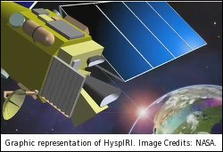

HyspIRI
HyspIRI is an acronym for Hyperspectral InfraRed Imager. It is a planned low earth orbit satellite mission that was recommended in the recent National Research Council Decadal Survey requested by NASA, NOAA, and USGS. The HyspIRI mission will include two integrated instruments:
- Visible through ShortWave InfraRed (VSWIR) hyperspectral instrument operating from 380nm to 2500nm with a uniform spectral spacing equal to (or less than) 10nm. With a spatial resolution of less than 60m, it will have a 19 days repeat pass cycle at the equator.
- Thermal InfraRed (TIR) multispectral instrument with 7 bands in the far/emitted infrared, and 1 band in the mid infrared portion (centered at 3980nm) of the spectrum. Acquiring data at 60m spatial resolution, it will have a 5 days repeat pass cycle at the equator.
The mission is currently in the study stage. Since 2007 I have been serving as a member of the HyspIRI science study group, leading the TIR subgroup on Earth Surface Composition and Change. You may find the following links useful:
- For mission activities, white paper, meeting presentations, etc.: visit the HyspIRI web site (external link)
- Earth Surface Composition and Change: My presentation (PDF - 1.3 M)
- HyspIRI preparatory science at UAF (with external collaborators): Poster (PDF - 613 K)